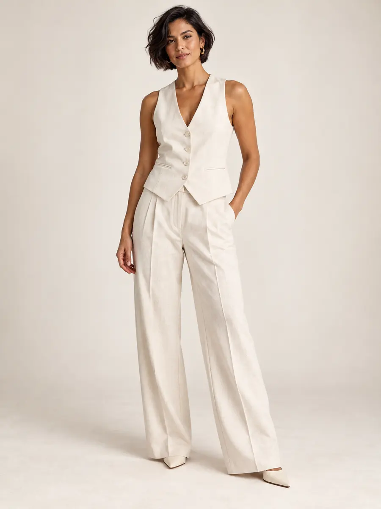

VESTIDOS
UM OLHAR PARA O SEU ESTILO
Vista o seu
próximo momento.
Explore propostas, observe os detalhes e encontre uma peça para chamar de sua.
Explore a coleção01 / A COLEÇÃO
Uma apresentação que começa na imagem e continua na conversa.

SELEÇÃO ILUSTRATIVA
A coleção.
Abra uma peça para observar a galeria e a proposta de consulta.
4 peças ilustrativas
Nenhuma peça nesta seleção.
Experimente outra categoria ou limpe os filtros.
Fotos geradas por IA e peças ilustrativas. Nenhum produto está à venda nesta demonstração. Os favoritos ficam disponíveis apenas durante esta visita.
A BOUTIQUE
Uma coleção.
Muitas formas
de ser você.
Este espaço apresenta a história e o olhar da loja. No projeto final, entram as informações reais da boutique, sua identidade e as fotografias autorizadas.
Uma vitrine para explorar com calma — e um caminho simples para conversar com quem conhece cada peça.
Entenda o atendimentoDO INTERESSE À CONVERSA
Observe.
Escolha.
Converse.
Explore a coleção
Encontre uma proposta e abra a peça para ver as imagens.
Consulte os detalhes
No site da loja, tamanhos, preços e disponibilidade são informados com dados confirmados pela boutique.
Continue no WhatsApp
A mensagem pode identificar a peça. A cliente revisa e confirma o envio.
DO MODELO AO SEU NEGÓCIO
Sua marca entra aqui.
A Vitrine Certa personaliza o projeto com os materiais da sua boutique. Quantidade inicial de peças, fotos, páginas, recursos, prazo e condições de pagamento ficam definidos no orçamento.
Domínio, hospedagem e manutenção são alinhados separadamente. Estoque conectado, checkout, pagamentos e outras integrações exigem avaliação específica.